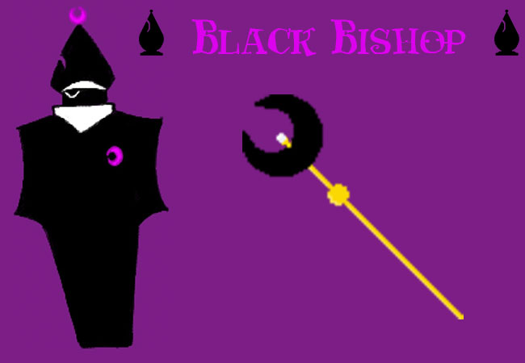

The BLACK BISHOP is a RELIGIOUS FIGURE on DERSE who spreads incorrect information about the RELIGION in order to control people easier. As someone with a lot of POWER, he typically uses it in order to get what, and WHO he wants. And just like the WHITE BISHOP he has knowledge that others wouldn’t as he mentions TRIX’S UNCLE during their first meeting.
As a BISHOP of the land, he wields the DARK CROZER which gives him the ability to summon the RED MILES.
You wonder who his student is..
> Back